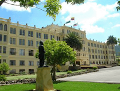

La Escuela de Policía General Rafael Reyes fue creada oficialmente en 1973 mediante el Decreto 2421 del Gobierno Nacional. Su nombre se dio en homenaje al expresidente colombiano Rafael Reyes, nacido en Santa Rosa de Viterbo. La escuela funciona en un edificio histórico que originalmente perteneció a los jesuitas y fue utilizado como noviciado religioso. Años después, las instalaciones fueron entregadas a la Policía Nacional para crear un centro de formación policial. Actualmente, la institución se dedica a la formación de policías y es reconocida como uno de los lugares más importantes e históricos del municipio. En 2024 celebró sus 50 años de funcionamiento.